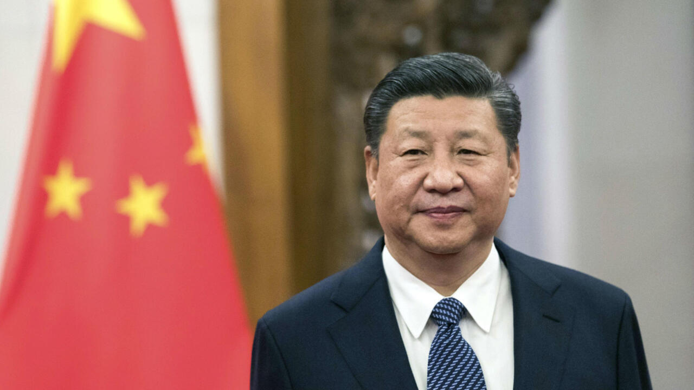
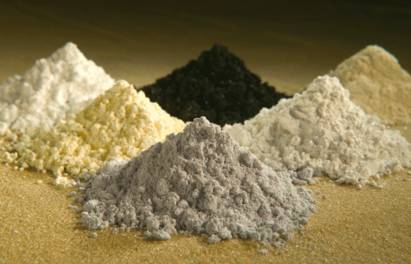

China advierte a Corea del Sur sobre la exportación de minerales de tierras raras
Internacional | 22 de abril de 2025 — China ha emitido una advertencia formal a Corea del Sur, instando a sus empresas a cesar la exportación de productos que contengan minerales de tierras raras de origen chino a contratistas de defensa de Estados Unidos. Esta medida refleja el aumento de la tensión en la guerra comercial entre China y Estados Unidos, la cual ahora afecta a terceros países como Corea del Sur, un actor clave en las cadenas de suministro globales de alta tecnología.
El Ministerio de Comercio de China ha enviado cartas oficiales a diversas empresas surcoreanas que fabrican productos clave como transformadores eléctricos, baterías, pantallas, vehículos eléctricos, equipos aeroespaciales y médicos, sectores que dependen de estos minerales críticos. En dichas cartas, se advierte que el incumplimiento de las nuevas restricciones podría resultar en sanciones, aunque no se detallan las penalidades específicas. Algunas empresas surcoreanas temen que China pueda llegar a bloquear por completo el suministro de estos metales.
Este desarrollo sigue a la imposición de China de controles de exportación a seis metales de tierras raras pesadas y a imanes de tierras raras, que requieren licencias especiales para su exportación. El proceso para obtener estas licencias puede tardar hasta 45 días, lo que equivale a una prohibición efectiva a corto plazo. Además, Pekín ha prohibido a sus compañías negociar con 27 contratistas militares estadounidenses como represalia directa por los aranceles impuestos por el presidente Donald Trump.
Las tierras raras, especialmente las pesadas, son esenciales para la fabricación de imanes utilizados en una amplia gama de productos, incluidos automóviles, drones, robots, misiles, motores de reacción, láseres, faros de automóviles y chips de computadoras que alimentan servidores de inteligencia artificial y teléfonos inteligentes. China domina la producción de estos minerales y controla el 90% de la producción mundial de imanes de tierras raras, lo que le otorga un control estratégico sobre este recurso.
Esta es la primera vez que China aplica medidas de control de exportaciones a empresas extranjeras no estadounidenses debido a su relación comercial con Estados Unidos, siendo Corea del Sur el primer país afectado. Dada la alta dependencia de Corea del Sur de las exportaciones, especialmente en sectores como semiconductores, baterías y vehículos eléctricos, estas restricciones podrían tener consecuencias severas para su economía.